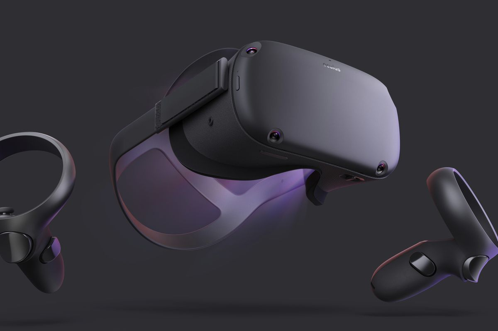

Technologie coup de coeur
-

La première technologie qui m'a intéressé depuis le secondaire est la réalité virtuelle, depuis le moment ou j'ai pris connaissance de ce qu'étais la réalité virtuelle et les possibilités que cette technologie offrait, j'ai toujours voulu posséder mon propre casque de réalité, et il y a deux ans, ce souhait c'est réaliser lorsque j'ai accheté un casque de réalité virtuelle "Oculus Quest" de Facebook.
-

La deuxième technologie qui m'a le plus impressioné est l'intelligence artificielle, j'ai pris connaissance de cette techologie avant le secondaire mais je ne m'y était jamais vraiment intéressé avant de prendre connaissance de toute les possibilitées que cette technologie offre. Elle permet de reproduire des actions humaines plus efficacement et rapidement, cela permet aux employer de ce concentrer sur des tâches plus importantes.
-
La troisième technologie qui m'a intéressé est l'internet of things ça consiste en toutes technologies qui contiennent des logiciels et une capacité de mémoire par exmple les montres intelligente et les télévision intelligente. Je trouve impressionant que l'ont puissent mettre autant de technolologie dans des petites choses comme les montre intelligente et même des lunettes !